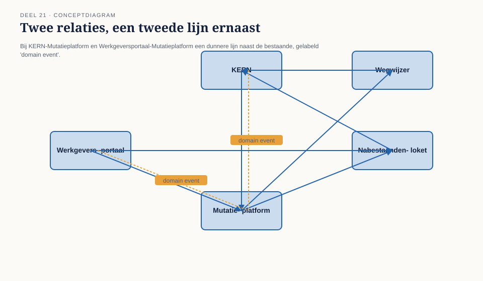
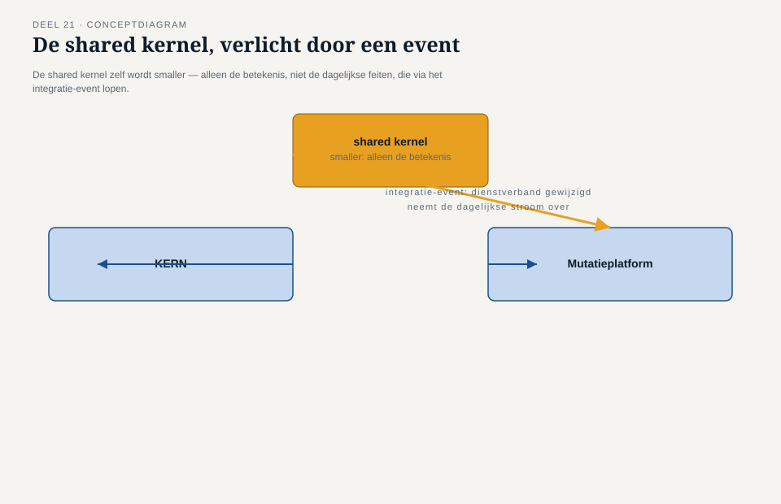
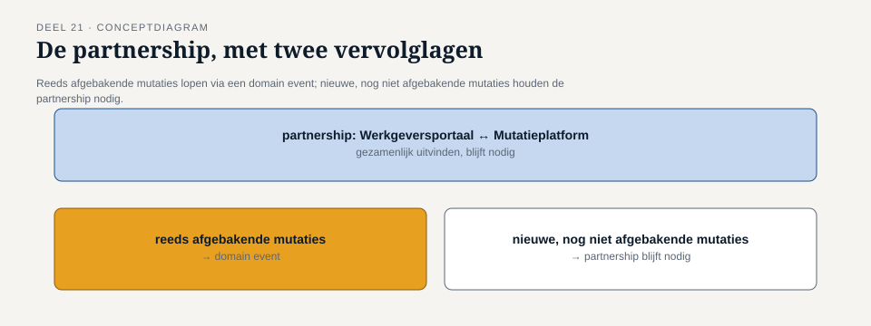
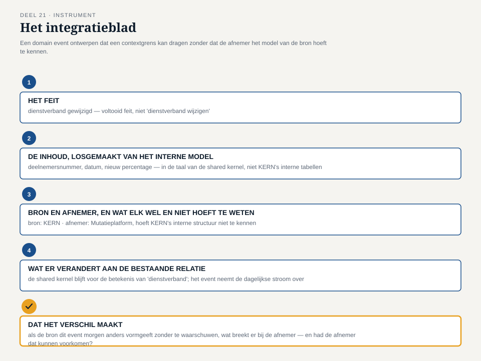

Deel 21 — Domain events als integratiemiddel tussen contexts
Slidedeck · Ductus-cursus Domain-Driven Design · niveau 2 · deel 21 van 30 · 34 slides
Slide 1 — Titel
Domain-Driven Design — deel 21 Domain events als integratiemiddel tussen contexts Niveau 2: professional · Programma Mutatieplatform
Slide 2 — Waar deel 20 eindigde
Teamgrenskaart: twee relaties vragen meer afstemming dan de teams kunnen dragen. KERN-Mutatieplatform. Werkgeversportaal-Mutatieplatform.
Slide 3 — Iris, terug bij de stuurgroep
“Het koppel krijgen jullie. Niet de omvang die je vroeg.”
Slide 4 — Iris, de vraag die overblijft
“Kunnen jullie de relaties zelf zo ontwerpen dat ze minder van die schaarse mensen vragen?”
Slide 5 — Foppe pakt de belofte van deel 20 op
Published language (deel 14) als patroon. Vandaag: uitgewerkt als een concreet domain event.
Slide 6 — Wat dit deel oplevert
- Intern domain event versus integratie-event
- Twee relaties toegepast: KERN-Mutatieplatform, Werkgeversportaal-Mutatieplatform
- Het integratieblad
Slide 7 —

De context map met, bij twee relaties, een tweede, dunnere lijn: “domain event”
Slide 8 — Domain event, ter herinnering (deel 7)
Een onveranderlijk vastgelegd feit. Iets is gebeurd — het verandert niet meer terug.
Slide 9 — Wat verandert er over een grens
Binnen één context: vanzelfsprekend. Over een grens: de afnemer kent het interne model niet.
Slide 10 — Het integratie-event
Geen nieuw begrip. Een bewuste keuze: welk event naar buiten, in welke vorm, met welke garantie.
Slide 11 — Vera
“Een integratie-event is een belofte aan de rest van het landschap. Die belofte moeten we nakomen — ook als we intern herstructureren.”
Slide 12 — Otto, het onderscheid
“Een shared kernel is: we bouwen dit stukje samen, voor altijd. Een integratie-event is: ik vertel je wat ik heb gedaan, jij beslist zelf wat je ermee doet.”
Slide 13 — Foppe, de waarschuwing
Een integratie-event vervangt geen shared kernel. Gedeelde betekenis blijft gedeeld — alleen doorgegeven feiten worden event.
Slide 14 —

Bron-context, afnemer-context — één smalle doorgang: het integratie-event, al vertaald bij vertrek
Slide 15 — Eerste toepassing: KERN en Mutatieplatform
De shared kernel uit deel 13. Wat is gedeelde betekenis, wat is een doorgegeven feit?
Slide 16 — Vera, het onderscheid toegepast
Definitie van “dienstverband” → blijft shared kernel. Feit van een specifieke wijziging → wordt event.
Slide 17 — Het event
“Dienstverband gewijzigd” In de taal van de shared kernel — niet KERN’s interne tabellen.
Slide 18 — Otto
“Het koppel houden we over voor de momenten waarop de betekenis zelf ter discussie staat — niet voor elke dagelijkse wijziging.”
Slide 19 — Iris, de vraag
“Betekent dit dat het koppel overbodig wordt?”
Slide 20 — Vera
“Nee. Het betekent dat het koppel het juiste werk gaat doen.”
Slide 21 —

Shared kernel, versmald tot betekenis alleen — de dagelijkse stroom via het event
Slide 22 — Tweede toepassing: Werkgeversportaal en Mutatieplatform
De partnership uit deel 13. Karsten: “Dat kun je toch niet vervangen door een event?”
Slide 23 — Foppe
Het samen uitvinden blijft partnership. De dagelijkse doorgifte van een afgesproken vorm — dat kan een event zijn.
Slide 24 — Het event
“Deeltijdwijziging geaccepteerd” Vorm uit de example-mapping-afspraken van deel 17.
Slide 25 — Karsten
“Mijn team wordt niet groter. Maar het hoeft minder vaak te overleggen over dingen die eigenlijk al beslist zijn.”
Slide 26 — Otto, de kanttekening
Werkt voor afgebakende mutaties. Werkt niet voor een nieuw type — daar blijft de partnership nodig.
Slide 27 —

Partnership — twee lagen: afgebakend → event. Nieuw → partnership blijft.
Slide 28 — Wat buiten dit deel blijft
Gemiste of dubbele events, eventual consistency — conceptueel terug in niveau 3, deel 25. Techniek van verzending — de Toolbijlage.
Slide 29 — De werkvorm van dit deel
Het integratieblad
Vier velden. Eén vraag die het verschil maakt.
Slide 30 — De vier velden
- Het feit — als voltooide gebeurtenis
- De inhoud, losgemaakt van het interne model
- Bron en afnemer — wat hoeft de afnemer niet te weten?
- Wat blijft er van de bestaande relatie staan?
Slide 31 — Het veld dat het verschil maakt
Als de bron dit event morgen wijzigt
zonder te waarschuwen — wat breekt er,
en had de afnemer dat kunnen voorkomen?
Slide 32 —

Het integratieblad ingevuld voor “dienstverband gewijzigd”
Slide 33 — Daan, terugblik
“Vandaag hebben we voor het eerst gezegd: zo maken we de relatie zelf lichter, zodat de teams minder hoeven te dragen.”
Slide 34 — Terug naar de casus, en vooruit
Iris: “Het eerste voorstel dat geen extra mensen kost.” Deel 22 — het geheel verdedigen, en vastleggen in één portfolio.